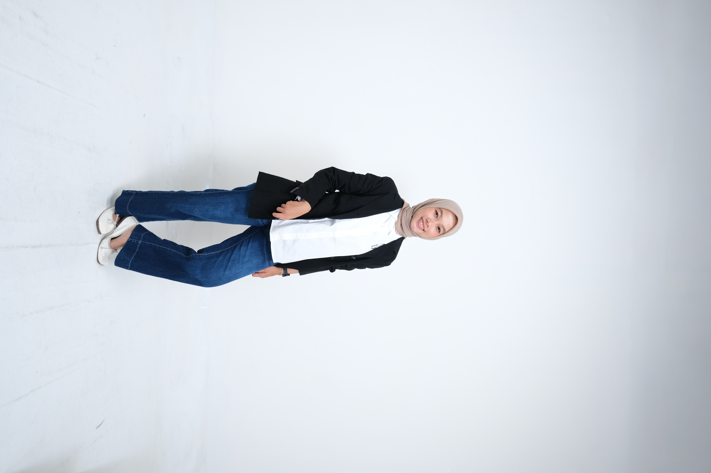

Artificial Intelligence
Applying machine learning tools and exploring AI concepts through coursework and practical projects.
OPEN TO OPPORTUNITIES
An Informatics Engineering graduate with a strong interest in Artificial Intelligence and UI/UX Design. I enjoy learning how technology can solve real-world problems and create meaningful user experiences.

CURIOUS BY NATURE
✳CREATIVE IN THINKING
✳GROWING THROUGH TECHNOLOGY
01 / A LITTLE ABOUT ME
I’m a fresh graduate in Informatics Engineering from Telkom University Purwokerto, with a strong interest in Artificial Intelligence and UI/UX Design.
Through internships, laboratory assistance, academic projects, and organizational activities, I have applied my technical knowledge to practical challenges. I have experience with Python, TensorFlow, Keras, scikit-learn, and Figma, and I’m passionate about leveraging AI technologies and designing user-centered digital solutions to solve real-world problems.
02 / WHAT I WORK WITH
Applying machine learning tools and exploring AI concepts through coursework and practical projects.
Exploring user-centered digital solutions and interface design.
Supporting software quality through test-case preparation, execution, bug identification, and validation.
Hands-on experience contributing to web application development and database-related tasks.
03 / THE JOURNEY SO FAR
Telkom University Purwokerto
Assisted students in implementing AI concepts, including algorithm design, problem modeling, and fuzzy logic, while helping strengthen their analytical and critical-thinking skills.
PT Telekomunikasi Indonesia (Telkom Daerah Purwokerto)
Collaborated with a development team to build a web-based calculator for post and non-post product services. Developed frontend and backend features using PHP, CSS, and MySQL, including PDF invoice generation, database development, testing, debugging, and feature enhancements.
PT Cazh Teknologi Inovasi
Collaborated with a cross-functional team on an AI-based attendance system for educational institutions. Created and executed test cases, identified bugs, and validated system functionality, including AI features using YuNet and SFace. Gained hands-on experience with Flutter, Flask, Express.js, MySQL, ORM, and Figma.
Telkom University Purwokerto
Assisted students in understanding programming fundamentals, debugging code, and developing problem-solving skills.
Telkom University Purwokerto
Guided students in operating-system concepts, including process and memory management, file systems, and system security using Linux and Red Hat.
Innovillage
Contributed to the development of IoT solutions, farmer training programs, and community empowerment initiatives to support sustainable agriculture.
04 / SELECTED WORK
A selection of internship, academic, and community projects based on my experience.
PT CAZH TEKNOLOGI INOVASI · 2025
Supported quality assurance for an educational attendance system with face detection and recognition features using YuNet and SFace.
TELKOM INDONESIA · 2025
A web-based calculator application for product-service calculations, with PDF invoice generation aligned with internal company requirements.
INNOVILLAGE · 2023
An IoT and community empowerment initiative supporting sustainable agriculture through technology development and farmer training.
PKM-KEMDIKBUD · 2024
A community service project supporting the education and well-being of children with HIV/AIDS in Kebumen Regency through a HighScope-based approach.
05 / EDUCATION
Faculty of Informatics · Telkom University Purwokerto
GPA: 3.68 / 4.00Relevant coursework: Database, Data Structures and Algorithms, Human-Computer Interaction, Internet of Things, Artificial Intelligence, Operating Systems, and Computer Networks.
06 / RECOGNITION & CONTRIBUTIONS
Received funding from the Ministry of Education, Culture, Research, and Technology (Kemendikbud) for a community service project supporting children with HIV/AIDS in Kebumen Regency. Contributed to project planning, educational program implementation, and teacher training using the HighScope approach.
Received the Best Implementation Award for the execution of the PKM project at Telkom University Purwokerto.
Co-authored an article on learning and psychological support for children with HIV/AIDS using a HighScope-based approach, published on July 30, 2024. Co-authored the eBook “Pendampingan Belajar dan Psikologis Anak dengan HIV/AIDS di Kabupaten Kebumen Berbasis Metode HighScope,” with HKI registered on July 22, 2024.
07 / LEADERSHIP & ACTIVITIES
Designed and managed educational programs to improve members’ and the public’s understanding of renewable energy, including seminars, workshops, and scientific discussions.
Participated in organizational activities and projects, strengthening public speaking, communication, and collaboration skills.
08 / LET’S CONNECT
I’d love to connect, exchange ideas, and explore how we can create something meaningful together.
Say hello ↗